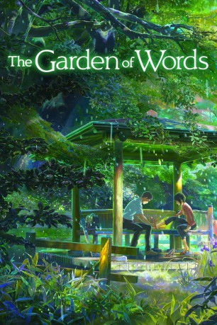

#3148 The Garden of Words
 
 IMDB-Wertung: 7.6 / 10
IMDB-Wertung: 7.6 / 10  Metascore: 0
Metascore: 0 
Der 15-jährige Schüler Takao Akizuki mag den Regen, weil er selbst in einer Großstadt den Himmel einem etwas näher bringt. Deswegen sind regnerische Morgen auch viel zu schade, um in die Schule zu gehen. Stattdessen geht Takao, wenn es regnet, in einen Park, um in Ruhe seinen Gedanken und seinem Hobby nachzugehen. Eines Morgen trifft er an seinem Stammplatz im Park eine seltsame junge Frau, die Bier trinkt und dazu Schokolade verzehrt. Außerdem scheint sie, so wie Takao die Schule schwänzt, ihrem Arbeitsplatz fernzubleiben. Wer ist die merkwürdige Unbekannte und warum kommt sie ihm so bekannt vor?
Jahr: 2013
Dauer: 46 Minuten
FSK: 0
Land: Japan Studio: Toho CompanyTonspuren: DTS-HD - ,
Untertitel: Deutsch,
Auflösung: 1080p (1920x1080) Größe: 4485 MB
Genre: Drama, Animation/Trick, Liebe
Regisseur: Makoto Shinkai
Drehbuch: Makoto Shinkai
Soundtrack: Daisuke Kashiwa
Darsteller:
 Miyu Irino als Takao Akizuki
Miyu Irino als Takao Akizuki- Kana Hanazawa als Yukari Yukino
- Fumi Hirano als Takao's Mother
- Gou Maeda als Takao no ani
- Takeshi Maeda als Takao's Brother
- Yuka Terasaki als Takao's Brother's Girlfriend
- Takanori Hoshino als Itou-sensei
- Suguru Inoue als Matsumoto
- Megumi Han als Satou
- Mikako Komatsu als Aizawa
- Yuki Hayashi als Moriyama
- Wataru Sekine als Young Takao
- Risa Mizuno als
- Hiroshi Shimozaki als
- Kuniko Ishijima als
- Taishi Murata als
- Azusa Tadokoro als
- Patrick Poole als Takao Akizuki
Datei: X:\Kinder Anime\Div Anime\Garden of Words, The (2013, FSK0, 1920x1080).mkv seit 03.02.2016
Festplatte: Kinder-Filme+Trick
 Es gibt insgesamt 40 Filme in der Gruppe 'Kinder Anime\Div Anime'
Es gibt insgesamt 40 Filme in der Gruppe 'Kinder Anime\Div Anime'